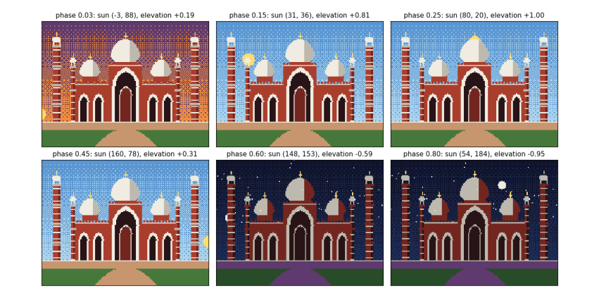

4. Time and motion¶
Motion is a picture that depends on time. Here the time is the hour of the day: the sun crosses the sky, the sky changes colour, and the building takes its night colours after sunset.
Watch the result: a day and a night as an animated GIF.

4.1 Time and frames¶
An animation is a sequence of still pictures, frames, shown quickly; at 20 frames a second the eye sees motion. A program makes them with a loop: for each frame, work out the time t, update everything that moves, draw the scene, and store the picture. Everything that changes is a function of time.
The sun moves on a circle of radius 84 centred below the ground. A day is one turn, phase 0 to 1: the angle is a = 2π × phase, the position is (80 − 84 cos a, 104 − 84 sin a), and sin a is the sun's elevation: positive by day, negative by night. The sky's two colours are chosen from the elevation.
Night uses the palette trick: every colour of the building is swapped for its darker partner (sandstone 9 becomes shade 10, marble 7 becomes grey 8). This is a palette swap, as old games did to make night levels without drawing anything again.
NIGHT = {9: 10, 7: 8, 12: 13, 14: 2, 8: 10, 10: 11}
def sun_position(phase):
a = 2 * math.pi * phase
return 80 - 84 * math.cos(a), GROUND - 84 * math.sin(a), math.sin(a)
def sky(c, elevation):
if elevation > 0.25: top, bottom = 3, 4 # day
elif elevation > 0: top, bottom = 2, 5 # sunrise and sunset glow
elif elevation > -0.2: top, bottom = 0, 2 # twilight
else: top, bottom = 0, 1 # night
gradient(c, top, bottom)
if elevation < 0:
rng = np.random.default_rng(7) # same seed, so the same stars every frame
c[rng.integers(0, 60, 40), rng.integers(0, W, 40)] = 7
def render(phase, extras=()):
c = new_canvas()
sx, sy, elev = sun_position(phase)
sky(c, elev)
if elev > -0.05:
fill(c, disc(sx, sy, 6), 6)
else:
mx, my, _ = sun_position(phase + 0.5) # the moon is opposite the sun
fill(c, disc(mx, my, 4), 7)
ground(c)
before = c.copy()
for comp in badshahi():
comp.draw(c)
if elev < 0:
covered = (c != before) | (Y >= GROUND - 8)
old = c.copy()
for a, b in NIGHT.items():
c[covered & (old == a)] = b
for e in extras:
e(c)
return c
phases = [0.03, 0.15, 0.25, 0.45, 0.6, 0.8]
fig, axes = plt.subplots(2, 3, figsize=(11, 6))
for ax, p in zip(axes.flat, phases):
sx, sy, e = sun_position(p)
show(render(p), f"phase {p:.2f}: sun ({sx:.0f}, {sy:.0f}), elevation {e:+.2f}", ax)
plt.tight_layout(); plt.show()
def save_gif(frames, path, fps=20):
imgs = [Image.fromarray(RGB[f]).resize((W * 4, H * 4), Image.NEAREST) for f in frames]
imgs[0].save(path, save_all=True, append_images=imgs[1:], duration=int(1000 / fps), loop=0)
save_gif([render(-0.05 + 1.1 * f / 120) for f in range(120)], OUT / "day_and_night.gif", fps=15)
print("saved", OUT / "day_and_night.gif")

saved data\day_and_night.gif
Each panel is the same scene at a different phase of the day; only the phase number changed. At phase 0.03 the sun has just risen at the left (elevation +0.19), so the sky has the sunrise glow. At 0.15 and 0.25 it is high and the sky is blue. At 0.45 it is setting on the right. At 0.6 and 0.8 the elevation is negative: the sky turns dark, stars appear, the moon is up, and the building has swapped to its night colours. The 120 frames are saved as an animated GIF in data/; open it to watch a whole day in eight seconds.